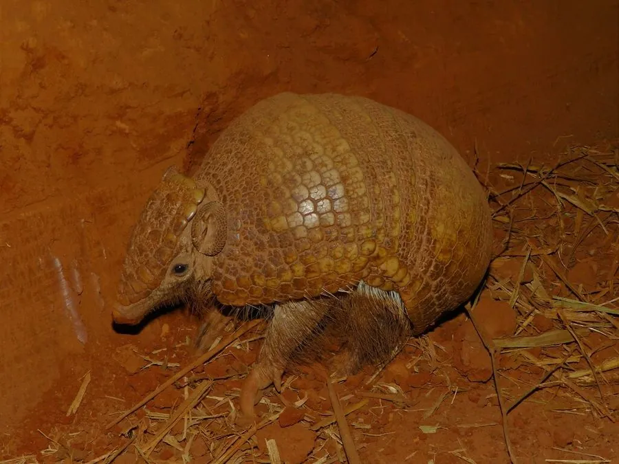

哺乳动物 · 动物界
三带犰狳 Tolypeutes matacus

南美中部的小型犰狳，背部只有三道活动环带，能把自己完全卷成一只硬球，遇险时缩成球状抵御捕食者，是唯一会滚球的犰狳。
- 分类
- 门脊索动物门纲哺乳纲目有甲目科犰狳科属三带犰狳属
- 栖息环境
- 干旱灌丛、稀树草原、棕榈林与季节性沼泽边缘
- 地理分布
- 巴西中部与西南部、玻利维亚、巴拉圭、阿根廷北部
- 保护级别
- IUCN 近危（NT）；CITES 附录Ⅱ
物种志
三带犰狳体形较小，成年体长约 22–32 厘米，尾长 5–8 厘米，体重 1–1.6 千克。头顶的骨质甲片与肩部、臀部甲板之间有明显的缝隙，中间的带状甲只有三道可活动，这使它能把身体卷成几乎密封的球体，头尾严丝合缝地扣在一起，连细小的缝隙都不留，因此也被称作球犰狳。四肢短而粗，前足有发达的弯曲利爪，用于挖掘和白蚁巢。
它们栖息于南美洲中部的干旱灌丛、稀树草原和沼泽边缘，多在夜间单独活动，主要靠敏锐的嗅觉寻找白蚁、蚂蚁及其幼虫，也吃果实和蠕虫。与多数犰狳不同，它挖掘能力较弱，遇到危险时首选蜷缩成球，而不是钻进地洞。每年繁殖一胎，孕期约 120 天，每胎一仔。由于栖息地被大豆田和牧场取代，加上道路开发与猎捕，其种群在南美部分地区明显下降。
形态与习性
- 体长约 22–32 cm，尾长 5–8 cm
- 体重约 1–1.6 kg
- 食性白蚁、蚂蚁及其幼虫为主，兼食果实与蠕虫
- 防御方式蜷缩成完全闭合的球体，头尾甲缘严丝合缝
- 繁殖孕期约 120 天，每胎一仔
- 活动节律夜行性，白天藏于灌丛或废弃洞穴中
- 寿命野外约 10 年，饲养下可达 15 年
趣味知识
- 它是唯一能把身体完全卷成球、连缝隙都不留的犰狳。
- 三带犰狳的甲片分三道活动带，卷起时像折叠的百叶。
- 它不太会挖洞，遇险时宁可缩成一个球滚进灌木丛。